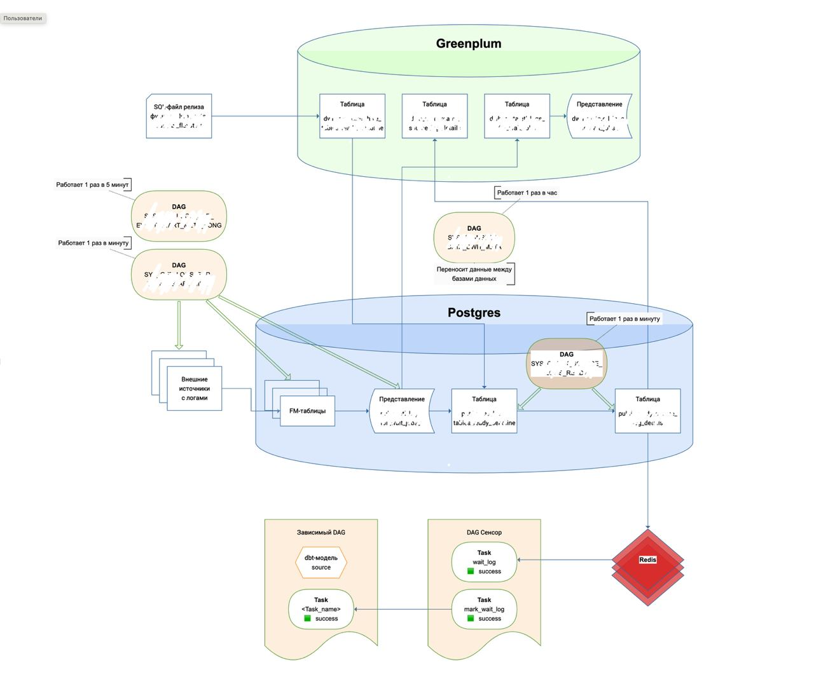

Запуск потоков по событию
Работа части потоков данных в ночном и вечернем регламентах связана с источниками, которые не имеют четкого времени готовности. Эти потоки не запускаются Airflow, пока в Postgres не появятся логи готовности источников. Такой запуск называется событийным.
Структура событийного запуска:
- dbt-модели — в них указываются зависимости от логов источников.
- Представление — хранит логи готовности источников.
- Настройки обработки логов — хранятся в таблице и задаются через SQL-функцию.
- Таблица обработанных логов — хранит логи из представления, настройки и результат их обработки.
- Redis — хранит данные сводной таблицы и обеспечивает к ним быстрый доступ.
- Сенсоры — проверяют в Redis готовность логов и сообщают Airflow, что зависимые потоки могут быть запущены.
Большинство этапов событийного запуска выполняется автоматически. Чтобы привязать поток к событийному запуску разработчику необходимо:
- Установить зависимости потока от события в dbt-модели.
- Задать настройки для обработки логов.

Установить зависимости потока от события
Чтобы поток данных внутри регламента запускался по событию, нужно указать на уровне dbt-модели от каких источников он зависит. Для этого укажите в объекте source модели название external-таблицы, которая ссылается на лог из представления view.name.
Во время запуска регламента Airflow определит, что поток зависит от лога и запустит его только, когда на сенсоре появится метка готовности лога.
Где хранятся логи готовности источников
| Наименование | Значение |
|---|---|
| Представление | view_name |
| База данных | Postgres |
| Какие даги загружают данные | DAG_NAME1 DAG_NAME2 |
| Какой даг выгружает данные | DAG_NAME |
Логи готовности источников хранятся в представлении view.name. На следующих этапах событийного механизма, данные представления будут обработаны и добавлены в Redis.
Логи собираются из fm-таблиц и добавляются с помощью системных дагов: DAG_NAME1 и DAG_NAME2, которые:
- Собирают данные из внешних источников в fm-таблицы в Postgres.
- Загружают данные из fm-таблиц в представление.
Даг DAG_NAME собирает логи каждую минуту.
Даг DAG_NAME собирает логи раз в 5 минут.
Для обратной совместимости настроена синхронизация между базами данных Postgres и Greenplum с помощью дага DAG_NAME. Даг переносит данные из представления view_name в таблицу в Greenplum table_name. Затем в Greenplum формируется представление view_name доступное для пользователей.
Задать настройки обработки логов источников
| Наименование | Значение |
|---|---|
| Исходная таблица | table_name |
| Исходная база данных | Greenplum |
| Целевая таблица | table_name |
| База данных | Postgres |
| Какой даг загружает данные | DAG_NAME |
| Какой даг выгружает данные | DAG_NAME |
Для каждого лога источника можно задать набор настроек, которые будут применяться при релизе. Настройки прописываются в функции func_name в SQL-файле релиза:
SELECT func_name (
'000000000', --база таблицы-источника в Hive
'name', --имя таблицы-источника в Hive
0, --время дедлайна (час)
0, --время дедлайна (минута)
null, --время начала чтения логов (час)
null, --время начала чтения логов (минута)
1, --количество записей логов
);
Функция выполняется вместе с остальным SQL-кодом во время релиза:
- Настройки добавляются в таблицу table_name в Greenplum. Если в таблице были предыдущие данные о настройках обработки лога источника, они считаются неактуальными и не применятся.
- Даг DAG_NAME загружает данные настроек в целевую таблицу table_name в Postgres.
Таблица обработанных логов
| Наименование | Значение |
|---|---|
| Таблица | table_name |
| База данных | Postgres |
| Какой даг загружает и выгружает данные | DAG_NAME |
В таблице table_name собираются данные:
- логи источников из представления;
- настройки обработки логов;
- обработанные логи после применения настроек.
Данные попадают в таблицу с помощью дага DAG_NAME.
Что делает даг:
- Выгружает данные из представления view_name.
- Выгружает данные из таблицы table_name1.
- Загружает данные в таблицу table_name2.
- Отправляет данные в Redis.
Даг DAG_NAME переносит данные из таблицы в Postgres table_name1 в таблицу в Greenplum table_name2, которая доступна для пользователей.
Проверка готовности лога сенсорами
В вечернем и ночном регламентах есть отдельные даги — сенсоры. Когда Airflow запускает регламент, он запускает сенсоры, которые проверяют готовности логов для зависимых потоков данных. Для этого внутри сенсоров есть две задачи: task1 и task2.
При выполнении задачи task1 сенсор:
- Читает объект с логами object_name в Redis.
- Ищет лог по ключу в объекте.
- Меняет статус задачи на «success» если лог найден.
Если лог не найден, задача перезапускается до тех пор, пока лог не найдется.
Когда лог получен, запускается задача task2:
- Сенсор находит одноименную задачу в основном даге.
- Меняет статус задачи на «success».
- Airflow запускает зависимый поток данных на выполнение.
Если лог не был получен, зависимый от него поток все равно запустится по расписанию.